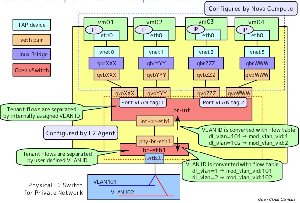

VIF顾名思义就是虚拟网卡，为什么我的title不用虚拟网卡而用VIF，因为如果你看Nova的源码，你会发现网络部分就是各种晃眼的VIF。Nova管理的VM通过VIF连通网络，我们便来研究一下他的实现机制，本文环境是H版Nova(KVM)+Neutron(OVS)。
VM安装完成后，需要为其设置网络接口，以便和主机网络，VM之间的网络通信。
KVM 客户机网络连接主要有两种方式:
那么在Openstack的云环境中，很明显Bridge模式更适合虚拟机网络，因为这样外部网络可以直接能访问到VM。
想象力不够的，可以看下面一张图，其实nova-network就是用的这种方式:
了解了这些基础知识，我们来看看Neutron网络模式下，Nova的VIF是怎么做的。
Nova的底层虚拟化我们用的是KVM，Neutron的核心我们用的是Openvswitch，所以万变不离其宗，VM的网络肯定还是Bridge模式，那么Nova和Neutron如何实现的？
先看nova.conf中几个重要配置:
compute_driver=libvirt.LibvirtDriver
libvirt_type=kvm
libvirt_vif_driver=nova.virt.libvirt.vif.LibvirtGenericVIFDriver
compute_driver是创建删除修改VM的具体实现，我们这里是使用libvirt，当然libvirt本身不是虚拟化平台，它只是一个统一操作接口，它背后是kvm、xen等各种虚拟化技术，libvirt_type指定了我们使用kvm虚拟化技术，libvirt_vif_driver指定了我们如何挂载虚拟网络设备。
LibvirtDriver中当你创建虚拟时，它会执行_create_domain_and_network，就是根据你设定的网络策略设备虚拟网卡，虚拟网卡的创建交给LibvirtGenericVIFDriver。
我们使用的是OVS实现虚拟网络的二层三层功能，所以我们之间看plug_ovs的关键代码:
def plug_ovs(self, instance, vif):
if self.get_firewall_required():
self.plug_ovs_hybrid(instance, vif)
elif self.has_libvirt_version(LIBVIRT_OVS_VPORT_VERSION):
self.plug_ovs_bridge(instance, vif)
else:
self.plug_ovs_ethernet(instance, vif)
我们看到一共有plug_ovs_hybrid、plug_ovs_bridge、plug_ovs_ethernet三种模式。plug_ovs_hybrid模式之前我们在讲Neutron SDN的时候有提到过，一张图(VLAN网络)来了解下:
qbr就是KVM Bridge模式需要的网桥，但是这种模式比较浪费，因为每个虚拟机都要建立一个qbr和一对veth设备，以便连接到ovs的br-int上。
这个明显是能优化的，libvirt 0.9.11版本之后，libvirt能够和ovs之间集成起来，省去qbr和veth pair的开销，这就是plug_ovs_bridge模式，这种模式原理也是KVM Bridge模式，只不过由ovs的br-int实现KVM Bridge的功能，随意选择一台虚机查看它的libvirt.xml
<interface type="bridge">
<mac address="fa:16:3e:f4:c9:bb"/>
<model type="virtio"/>
<source bridge="br-int"/>
<target dev="tap8a6107b1-3e"/>
<virtualport type="openvswitch">
<parameters interfaceid="8a6107b1-3e72-4b71-bd5f-1aa772517004"/>
</virtualport>
</interface>
这样一来，虚拟机对应的虚拟网卡(tap device)就会直接连接到br-int的port上(图示为GRE网络):
- 01eaa6d1-185f-41bd-9282-b1ad512b8351
- Port “tap0256b6ea-d1”
- tag: 2 Interface “tap0256b6ea-d1”
plug_ovs_ethernet其实和plug_ovs_bridge是一样的，只不过是兼容了下不能和OVS直接集成的libvirt低版本而已。
无论哪种模式，归根结底都是实现KVM Bridge网络，虚拟网卡tap device就是一个dhcp设备，它不会有静态ip，而对应的dhcp服务是由dnsmasq实现的， dhcp服务的host-file中保存着这些tap device的mac地址对应的ip:
root@ncloud-network:~# cat /var/lib/neutron/dhcp/34552b7d-e6de-4ec0-b170-72fe0afa9d90/host
fa:16:3e:9b:10:b6,host-20-20-20-4.openstacklocal,20.20.20.4
fa:16:3e:fd:77:64,host-20-20-20-3.openstacklocal,20.20.20.3
fa:16:3e:69:bc:20,host-20-20-20-1.openstacklocal,20.20.20.1
fa:16:3e:49:85:42,host-20-20-20-6.openstacklocal,20.20.20.6
就这样，虚拟机就有了IP，无论是要二层通信还是三层外网，这都是基础。